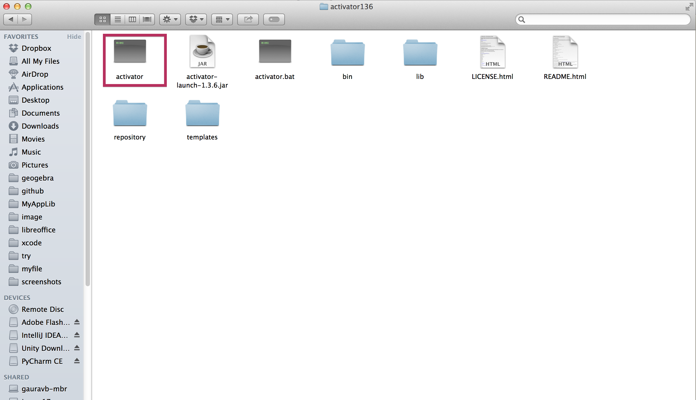

How to Set up the Play Framwork in Mas OSX[10.9.5]
Prerequisites: You need to install Java 6 or up[I currently install Java 7]
1. Download something called TypeSafe activator[I have no idea what the hell it is]
2. Unzip the file[typesafe-activator-1.3.x.x] and place it in your favour directory.
You should have something like that in your unzipped fodler

3. Set up the PATH points to your unzipped folder
In your .bashrc file,
export PATH=/mypath/typesafe-activator-1.3.x.x:$PATH
source ~/.bashrc
4. Test your setup
type: activator help
It shows up help menu. Otherwise you did it wrong